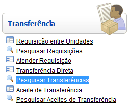

Pesquisar Transferências [ Voltar ]Utilize esta tela para localizar e abrir registros de transferências. Veja também como estornar transferências. O formulário "Pesquisar Transferências" encontra-se dentro do menu "Transferência". 
Ao clicar no formulário, o sistema exibirá a seguinte tela: 1º Passo: configure os filtros da pesquisa para localizar a transferência desejada. Antes de utilizar os filtros disponíveis para refinar a pesquisa, certifique-se de selecionar a pesquisa mais adequada (ver imagem abaixo): Data, Pendente, Aguardando Separação, etc. Selecione a opção Padrão para exibir todos os registros de transferência. Os filtros disponíves para auxiliar a consulta da transferência são:
Exemplo: se a data
atual é 20/10/2012,
digite "+10"
e pressione a tecla "Enter" para que o sistema retorne o dia 30/10/2012.
À medida que os filtros são preenchidos, os resultados são exibidos automaticamente na tabela de resultados. Para abrir uma transferência na tela "Fazer Transferência", selecione o registro desejado com um clique. Estorno de transferênciaVocê pode decidir desfazer uma transferência já enviada. Lembre-se que só é possível estornar uma transferência caso o status da mesma seja Enviada e haja estoque o suficiente no local para os produtos do estorno. Além disso, a ação de estorno só pode ser realizada a partir do local de envio.1° Passo:
após abrir o registro de transferência na tela "Fazer Transferência",
clique no botão Após clicar no botão  , a tela "Estorno de transferência"
será aberta para a transferência em questão. Ela carregará os dados dos
produtos contidos na transferência que ainda não foram estornados. , a tela "Estorno de transferência"
será aberta para a transferência em questão. Ela carregará os dados dos
produtos contidos na transferência que ainda não foram estornados. 2° Passo: informe na grade os produtos e quantidades para o estorno. Informe na coluna "Quant. Estorno" as quantidades para o estorno dos produtos. Para estornar a quantidade total do produto transferido, marque o campo "Estornar quantidade total". Se desejar estornar a quantidade total transferida de todos os produtos, clique no botão  .
Da mesma forma, utilize o botão .
Da mesma forma, utilize o botão  para as marcações da coluna "Estornar quantidade total". para as marcações da coluna "Estornar quantidade total".3° Passo: após especificar produtos e quantidades, clique no botão  para salvar as informações. para salvar as informações.4° Passo: clique no botão  para
concluir o estorno. para
concluir o estorno. |